40 MCQs and 8 structured responses. Chart stimuli are original SVG illustrations; values are labeled illustrative unless explicitly identified otherwise.
Multiple-choice questions
M3L4-001
Which library is described as the plotting foundation that offers detailed control but can require more code?
Matplotlib
Seaborn
Plotly
Bokeh
M3L4-002
Which library is built on Matplotlib and provides statistical plots with attractive defaults?
Bokeh
Seaborn
NumPy
Plotly
M3L4-003
A dashboard should let users zoom, pan, and hover over data points. Which library pair best supports this?
Matplotlib or NumPy
pandas or Seaborn
Plotly or Bokeh
SciPy or scikit-learn
M3L4-004
What role does pandas `.plot()` serve?
A replacement for storing data in a DataFrame
A machine-learning method for predicting categories
An interactive dashboard framework with built-in hover controls
A convenient way to make quick exploratory charts from pandas data
M3L4-005
A researcher wants to see how one numerical variable is distributed across its range. Which chart matches that question?
Histogram
Pie chart
Stacked bar chart
Line chart across categories
M3L4-006
In the age histogram, which interval has the largest frequency?
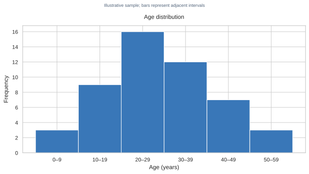
Histogram of illustrative ages; bins 0–9 through 50–59 have frequencies 3, 9, 16, 12, 7, and 3.
0–9
20–29
10–19
50–59
M3L4-007
In the income histogram, how many observations fall in the 60–79 interval?
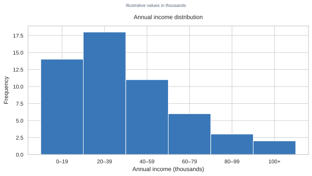
Histogram of annual income in thousands; the 60–79 bin has frequency 6.
3
11
6
18
M3L4-008
Why might an analyst try several values for `bins` when exploring the same numerical data?
values.plot.hist(bins=20)
Changing bins changes the original values in the DataFrame
More bins always prove a causal relationship
The number of bins determines the sample size
Different bin counts can reveal or obscure distributional structure even though the observations stay the same
M3L4-009
Which variable type and purpose best match a pie chart?
One categorical variable, showing parts of a whole
One numerical variable, showing its distribution
Two numerical variables, showing their relationship
A numerical value across time, showing a trend
M3L4-010
The survey pie has shares of 52%, 31%, and 17%. What is the strongest reason the pie is interpretable here?
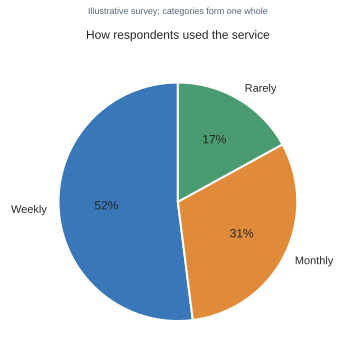
Pie chart of service-use categories: weekly 52%, monthly 31%, rarely 17%.
Pie charts are best for comparing exact values across many categories
It shows a small number of categories that make up one whole
It places a numerical distribution into bins
Its slices show a trend between successive months
M3L4-011
Why can a pie chart be a poor choice when category shares are 30%, 33%, and 37%?
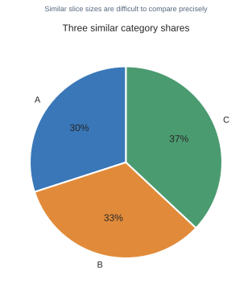
Pie chart with three similar shares: A 30%, B 33%, and C 37%.
A pie chart cannot represent categorical data
Pie charts convert categories into time series
Similar angles are hard to compare precisely; a bar chart makes the differences clearer
The percentages cannot sum to a whole
M3L4-012
In the pie chart with shares of 30%, 33%, and 37%, which category has the largest share?
Pie chart with three similar shares: A 30%, B 33%, and C 37%.
A
B
They are equal
C
M3L4-013
A manager wants to compare enrollment counts across Cairo, Giza, and Aswan. Which plot is most suitable?
Bar chart
Histogram
Pie chart of the city names
Line chart connecting the cities
M3L4-014
In a 100%-stacked bar chart, what can a reader compare?
The absolute sample sizes of groups with different totals
The composition of each group's 100% total, including the shares of its categories
Only the distribution of one numerical variable
The exact ordering of individual observations
M3L4-015
Which question is especially well suited to a box plot?
How many records fall in each five-year age interval?
What share of one total belongs to each category?
How do the median, quartiles, and spread of fares compare across survival groups?
How do two numerical variables relate point by point?
M3L4-016
On the fare box plot, which outcome group has the higher median fare?
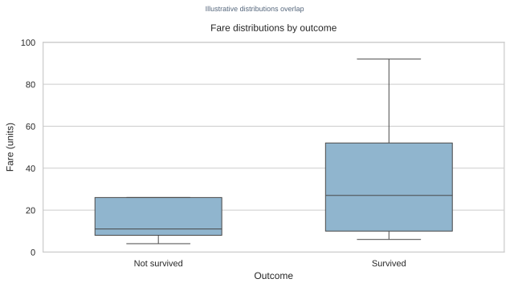
Two fare box plots; the survived group's median is above the not-survived group's, and their distributions overlap.
Not survived
They have the same median
The plot does not mark medians
Survived
M3L4-017
What important feature does the fare box plot show beyond a difference in medians?
Two fare box plots with overlapping boxes and whiskers; survived median is higher.
The two fare distributions overlap substantially
Every survivor paid more than every non-survivor
The two groups have identical distributions
Fare is a categorical variable
M3L4-018
A dataset records Egypt's population at ten-year intervals from 1960 to 2020. Which chart fits the ordered time series?
Pie chart
Line chart
Unordered bar chart only
Histogram
M3L4-019
Why would joining bars for France, Egypt, and Japan with a line suggest something misleading?
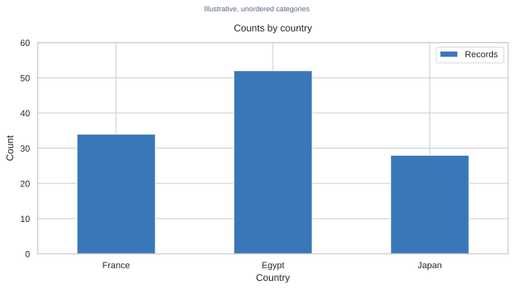
Bar chart comparing three unordered countries; categories are France, Egypt, and Japan.
A line chart can show only categorical data
The country names cannot appear on a horizontal axis
It implies meaningful intermediate values between unordered country categories
A line chart always converts values to percentages
M3L4-020
A scatter plot is designed to show what kind of relationship?
The composition of one categorical total
The frequency of intervals in one numerical variable
The distribution of one category across subgroups only
The relationship between two numerical variables
M3L4-021
What pattern is visible in the study-hours scatter plot?
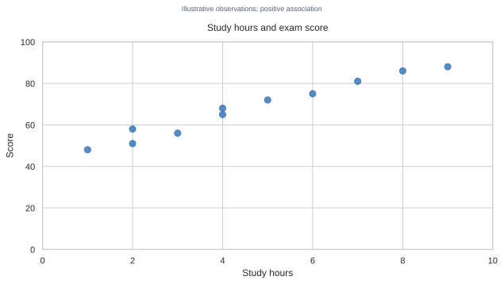
Scatter plot showing a generally positive association between study hours and quiz score, with points not perfectly aligned.
Scores generally increase as study hours increase, with some variation
Scores are constant for all study-hour values
Scores generally decrease as study hours increase
The plot shows only category proportions
M3L4-022
Which conclusion is justified by a positive pattern in a scatter plot of study hours and score?
Scatter plot with a positive association between study hours and scores.
Studying is proven to cause every score increase
The variables are positively associated in these observations
Every additional hour guarantees the same score gain
The variables are identical
M3L4-023
Which chart is shown in the student-score figure, and what is being compared?
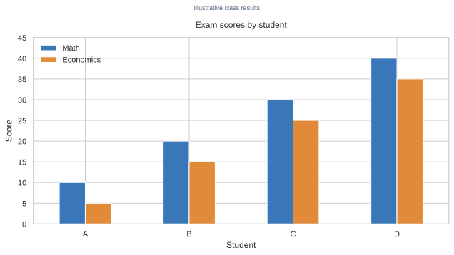
Grouped bar chart comparing Math and Economics scores for students A to D.
A stacked bar compares each student's score composition
A histogram compares one score distribution
Grouped bars compare Math and Economics scores across students
A line chart shows scores over time
M3L4-024
In the city enrollment horizontal bar chart, which city has the lowest displayed enrollment?
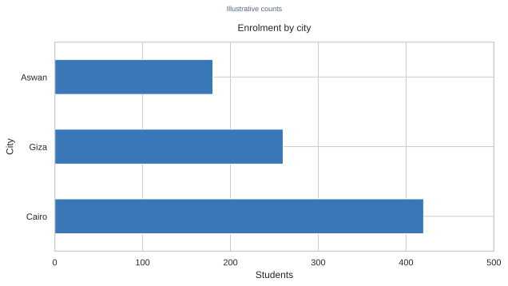
Horizontal bar chart of student enrollment: Cairo 420, Giza 260, Aswan 180.
Cairo
Giza
All three are equal
Aswan
M3L4-025
The class-count chart lists classes in the order 3, 1, 2. What explains this order?
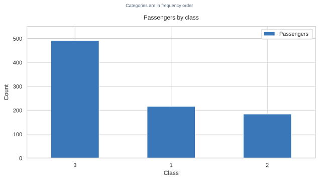
Bar chart of passenger counts with categories ordered by frequency: class 3, class 1, class 2.
The categories are arranged by frequency, from largest count to smallest
The classes are arranged by their natural numeric order
A line chart reordered the categories by time
The counts were normalized to percentages
M3L4-026
If passenger class has a meaningful order 1, 2, 3, which step makes the bar chart follow that order rather than frequency?
Apply `.sort_index()` to the value_counts result before plotting
Use `.sample()` before plotting
Convert the class labels to a pie chart
M3L4-027
Which chart in the set is designed to show a single numerical distribution rather than category comparisons?
Histogram showing frequencies across numerical age intervals.
The student grouped bar chart
The city enrollment bar chart
The age histogram
The outcome stacked bar chart
M3L4-028
In the Egypt population line chart, what does the rising sequence indicate?
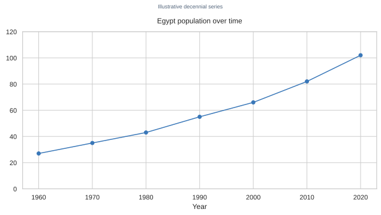
Line chart of Egypt's illustrative population from 27 million in 1960 to 102 million in 2020.
Population fell steadily from 1960 to 2020
The points represent unordered countries
The chart gives the share of a whole
Population increased across the observed years
M3L4-029
In the 100%-stacked outcome chart, which class has the largest 'Survived' share?
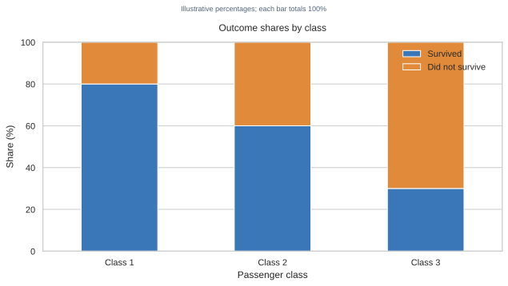
100% stacked bars; survived shares are 80%, 60%, and 30% for classes 1, 2, and 3.
Class 1
Class 2
Class 3
All are equal
M3L4-030
A researcher wants to examine whether age and fare vary together for individual passengers. Which chart is the best first view?
Pie chart
Scatter plot
Histogram of age only
Stacked bar chart of fare intervals
M3L4-031
The age–fare scatter has a few very high fares at different ages and no obvious upward pattern. What is the best reading?
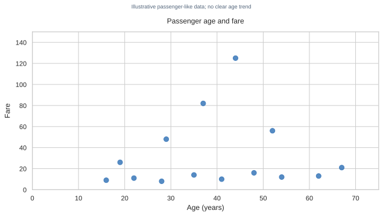
Scatter plot of passenger-like ages and fares with several high fares at different ages and no clear linear trend.
Every older passenger paid more
Age determines fare exactly
The plot shows no clear age trend, and fares vary widely at several ages
The highest fare must belong to the oldest passenger
M3L4-032
Which call creates a histogram of the `age` column with 20 bins?
df['age'].plot.hist(bins=20)
`df['age'].plot.bar(bins=20)`
`df.plot.line(x='age', bins=20)`
`df['age'].plot.pie(bins=20)`
`df['age'].plot.hist(bins=20)`
M3L4-033
A researcher wants to show how each group's outcomes contribute to that group's total and compare those compositions across groups. Which plot best fits?
Stacked bar chart
Histogram
Scatter plot
Single-series line chart
M3L4-034
Why might the box plot reveal a more complete group comparison than reporting only the two means?
Overlapping box plots of fare by outcome; the medians differ but ranges overlap.
It removes the need to know which variable is numerical
It also shows medians, quartiles, spread, and overlap between distributions
It proves that every observation equals the median
It shows exact causal effects
M3L4-035
The service-use categories are mutually exclusive parts of one response total. Which chart could show their composition, and what readability caveat applies?
Scatter plot, because categories are paired observations
Histogram, because categories are numerical intervals
Pie chart, if the number of categories is small
Line chart, because categories imply continuity
M3L4-036
Which plotting call compares Math and Economics by Student using the DataFrame shown?
df.plot.bar(x='Student')
`df.plot.hist(x='Student')`
`df.plot.pie(x='Student')`
`df.plot.scatter(x='Student')`
`df.plot.bar(x='Student')`
M3L4-037
In the two-group scatter plot, which group generally has the higher quiz score at study-hour values shared by both groups?
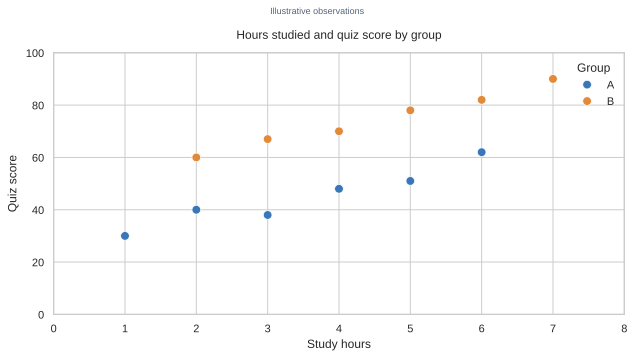
Scatter plot with two colored groups; Group B's scores are generally higher where study-hour values overlap.
Group B
Group A
The scores are identical at all shared values
The plot cannot distinguish groups
M3L4-038
What is pandas plotting best suited for?
Creating every kind of publication-ready graphic with no customization
Quick exploratory analysis while examining data
Training machine-learning models
Serving interactive dashboards with hover controls
M3L4-039
A bar chart shows unordered regions with counts. Why are bars preferable to connecting the region values with a line?
Bar chart comparing illustrative counts across unordered regions France, Egypt, and Japan.
Bars turn counts into proportions automatically
Lines are restricted to categorical values
Bars compare categories without suggesting values between categories
Regions cannot be displayed on a horizontal axis
M3L4-040
Which rule is best for selecting a chart?
Use a pie chart whenever the dataset has several columns
Use a line chart for every comparison
Choose the chart with the most colors, regardless of the variables
Choose the chart based on whether the question concerns distribution, composition, comparison, or relationship
Structured-response questions
M3L4-E01 · 5 marks
A student dataset has one numerical score for each learner and each learner belongs to one class. Recommend a chart for comparing score distributions across classes, explain what the reader can learn from it, and state one limitation of comparing only class means.
Two overlapping box plots show different medians but substantial overlap in group distributions.
M3L4-E02 · 5 marks
Use the grouped student-score chart. Describe the main comparisons it supports, identify one fact that can be read for a named student, and explain why a grouped bar chart fits better than a histogram for this dataset.
Grouped bars compare Math and Economics scores for students A, B, C, and D.
M3L4-E03 · 5 marks
Compare the age histogram and the income histogram. Identify the tallest bin in each, explain what binning does, and describe how changing the number of bins can affect the apparent story without changing the records.
Age histogram with its highest frequency in the 20–29 interval.Income histogram with its highest frequency in the 20–39 interval.
M3L4-E04 · 5 marks
Examine the study-hours and score scatter plot. Describe its pattern and give a careful conclusion. Explain why the plot alone cannot establish that extra study time caused the scores to rise, and name one additional kind of evidence or design that would help investigate causation.
Scatter plot with a generally positive association between study hours and score.
M3L4-E05 · 5 marks
A report compares survival outcomes across passenger classes and also wants readers to see how the total outcome composition differs by class. Use the 100%-stacked chart to state the surviving share in each class and justify why a stacked bar is suitable. What important information would the chart not show?
100%-stacked bars show survived shares of 80%, 60%, and 30% for classes 1, 2, and 3.
M3L4-E06 · 5 marks
A colleague uses a line chart to connect counts for France, Egypt, and Japan. Use the country comparison chart to explain why the line creates a misleading implication, then recommend a better chart and explain the difference in meaning.
Bar chart comparing counts in three unordered categories: France, Egypt, and Japan.
M3L4-E07 · 5 marks
A categorical survey asks whether respondents use a service weekly, monthly, or rarely. Recommend a chart for showing shares, explain when a pie is reasonable, and describe when a sorted bar chart would communicate the differences more clearly.
Pie chart with service use shares of weekly 52%, monthly 31%, rarely 17%.
M3L4-E08 · 5 marks
Write pandas plotting code for two tasks: (1) make a 20-bin histogram of a numerical `age` column; (2) make a scatter plot of numerical `age` against numerical `fare`. Explain what question each chart helps answer and state one limitation of using pandas `.plot()`.